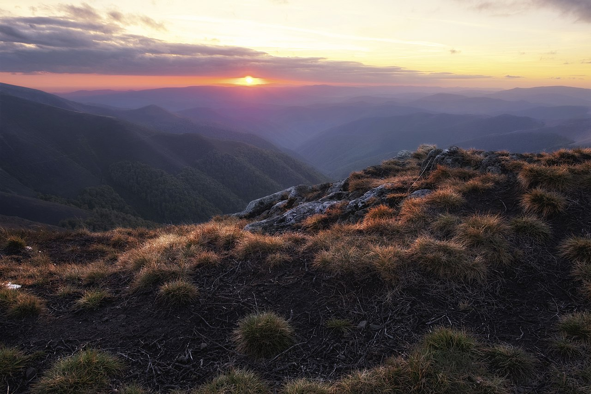
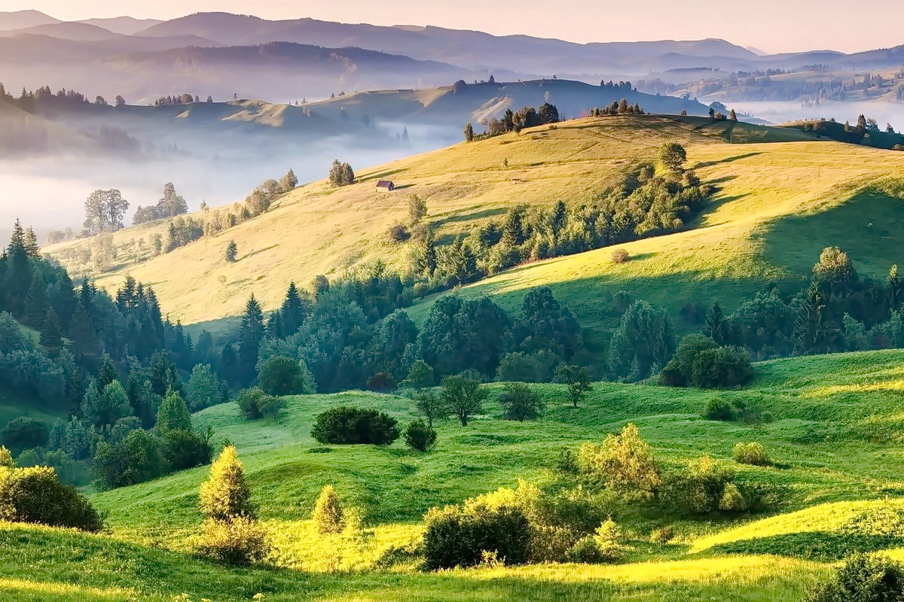

Опис туру
Полонина Боржава вважається однією з найгарніших місцевостей в Українських Карпатах. Також це один із найбільш комфортних хребтів для пішохідних походів. Дводенна мандрівка на Боржаву буде цікавою ще й з історичної точки зору: однією з основних атракцій на маршруті є залишки колишньої радянської військової частини та радіолокаційної станції на горі Стій, яка свого часу контролювала повітряний простір усієї Східної Європи. Похід завершується біля мальовничого водоспаду Шипіт; загальна довжина маршруту — 30 км.
Програма туру
День 1
Першого дня неспішно набираємо висоту і зупиняємось ночувати біля підніжжя гори Стій (14 км). - виїзд зі Львова (7:00) - переїзд до с.Вовчий - огляд форелевого господарства – перекус - перехід до підніжжя гори Стій-встановлення табору – вечеря - ночівля у наметах
День 2
Шлях цього дня пролягатиме через вершини Стій і Великий Верх до водоспаду Шипіт (16 км). – сніданок - перехід до г. Стій - перехід до г. Великий Верх - гірський перекус - спуск до водоспаду Шипіт - повернення у Львів (близько 21:00)
Особливі умови:
Програма походу розрахована на фізично здорових людей, яким цікавий активний відпочинок. Протяжність маршруту 30 км, часом кам’янистою поверхнею, що підвищуватиме складність шляху. Цей похід середньої категорії складності. Під час походу кожен несе власний рюкзак з особистим спорядженням, а також частину спільних продуктів харчування.
На вершинах температура повітря може бути значно нижчою, ніж унизу, а також часто буває сильний вітер. Можливі різкі зміни погоди, які важко передбачити.
Провідник залишає за собою право вносити зміни у програму походу, в залежності від погоди чи стану учасників.
Список рекомендованого спорядження для походу
пишіть на пошту з радістю дамо відповідь